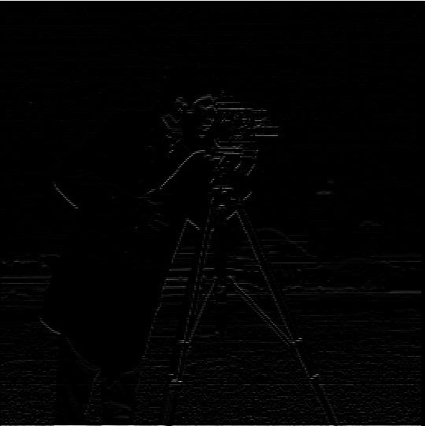

Finite Difference Operator
Using the finite difference operators, convolve the image with each derivative filter to obtain the partial derivatives with respect to x and y. Then, the gradient is simply the vector whose first component is the partial derivative along x and second component is the partial derivative along y. Of couse, we cannot plot this as an image, so we take its magnitude (Euclidean norm) and make an image. The magnitude gradient image has the edges of the original image.
| Derivative wrt to x-axis | Binarized partial derivative |
|---|---|
 |
|
| Derivative wrt to y-axis | Binarized partial derivative |
|  |  |
| Gradient | Binarized Gradient |
 |
 |